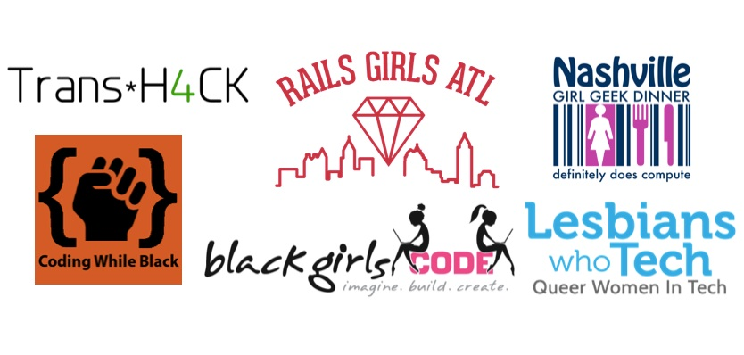

When a diverse set of presenters and participants comes together for a conference, everyone benefits from the variety of experiences, perspectives and voices in the room. We realize, however, that ticket costs can sometimes be prohibitive for individuals from underrepresented groups. That's why we've partnered with six fantastic organizations to distribute CodeConf tickets to their members. Each one has a mission to connect, support and/or educate people from backgrounds underrepresented in tech. This will help us build a diverse audience and a great experience for everyone.

Our partner groups have shared a little more about their work and upcoming projects, as well as details of how they're distributing their CodeConf tickets. Read on to get inspired, involved, and potentially grab a ticket for yourself, and remember too that you can help on a personal level by choosing to purchase the "scholarship" ticket option on the
registration page.
Black Girls CODE
Black Girls CODE is an international non-profit that empowers young women of color to enter the tech space as builders and creators by introducing them to coding and technology. www.blackgirlscode.org
Upcoming events:
-
June 19th - 21st: All Girls Hackathon, Oakland
-
June 20th: Oracle Academy's Greenfoot brought to you by Black Girls CODE, Memphis
-
June 20th: Introduction to Javascript Workshop, New York
-
July 24th-26th: All Girls Hackathon, New York
-
July: 1 week summer camps, Raleigh, NC and Washington D.C.
-
August: 1 week summer camps, Bay Area and New York
Ticket Details: We will be distributing our tickets directly to the Black Girls CODE network.
Coding While Black
Coding While Black is headquartered in Chicago; our focus is code education, professional development, and entrepreneurship. We welcome blacks in technology from around the globe to become active members of a growing community that supports, encourages, and connects black technology professionals. Members can post articles, share events, find other black technology professionals to connect with, and enjoy community features. www.codingwhileblack.com
Ticket details: Coding While Black is excited to partner in promoting CodeConf to a diverse audience. We will be distributing the tickets by sharing them with members who have volunteered with us and/or have been active participants in our community.
Girl Geek Dinner Nashville
The Nashville chapter of Girl Geek Dinner was founded with the goal to encourage and inspire Nashville’s young women and girls to pursue technology careers. Girl Geek Dinners have grown into an international movement. The ask is simple to sponsors — buy dinner and drinks for girl geeks, invite speakers and encourage networking amongst the girl geeks. www.ggdnashville.com
Upcoming events:
June 5th: Eventbrite is hosting our next Girl Geek Dinner where they are flying in 3 Software Engineers and a Product Manager to Nashville to give lighting tech talks.
Third Thursday of every month: Code & Pinot night is a great opportunity for beginner programmers to come out and get a taste of what programming is like. Bring your favorite wine and learn to code! Food provided.
Ticket details: We plan to distribute the tickets to our Girl Geeks through a coding contest and drawing. Coding contest: the first to give the correct answer will get a ticket. Drawing: we will randomly select a winner from contest entries.
Lesbians Who Tech
Lesbians Who Tech is a global community of 9,000 queer women in tech. It exists to provide value to queer women in tech, a demographic that is rarely represented in both the tech community and the LGBTQ community. We've hosted events in 22 cities worldwide and focus on connecting our community, increasing visibility and increasing women in tech and leadership positions. www.lesbianswhotech.org
Upcoming events:
Ticket details: We'll be offering the tickets through Lesbians Who Tech chapters in the Midwest
Rails Girls Atlanta
Rails Girls Atlanta is an encouraging place for women to take the plunge into learning to code. We host monthly meetups and socials where dev-minded ladies can ask questions, learn from others, and get the support they need to be successful. www.meetup.com/Rails-Girls-Atlanta
Upcoming events:
-
June 1st: All the Nerdy Ladies Social at Joystick. No agenda, just a time to visit and catch up with other nerdy lady types.
Ticket details: We’re planning to raffle off the tickets at our May meetup.
Trans*H4CK
Trans*H4CK is a hackathon and speaker series that tackles social problems by developing new and useful open source tech products that benefit the trans and gender non-conforming communities, while bringing visibility to transgender tech innovators and entrepreneurs.
We are planning to launch an online hackathon space this year--stay tuned! http://www.transhack.org
Ticket details: We will be distributing our CodeConf tickets through the Trans*H4CK network.